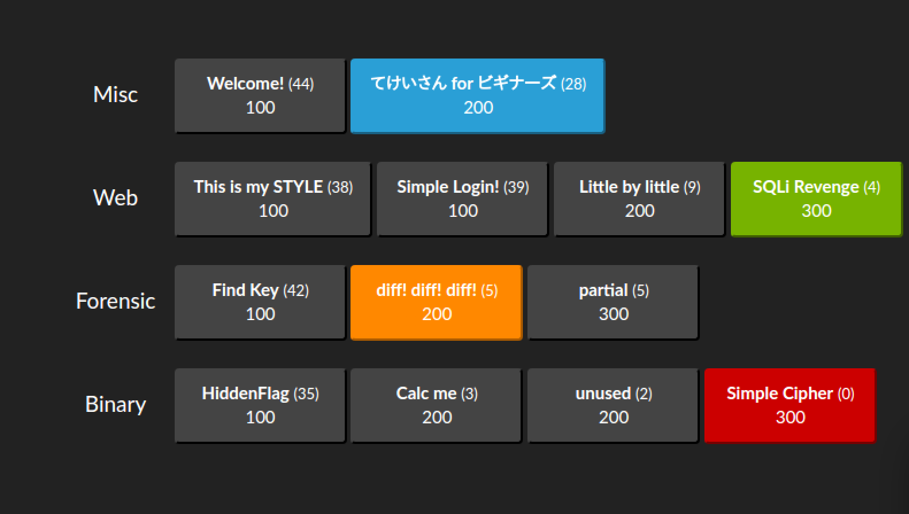

SECCON for Beginners 広島 行ってきた
先生や先輩などから熱い猛プッシュがあり、8月某日に某所で行われたSECCON for Beginners(ctf4b)に参加してきた。
講義
- Web (ChromeのDevToolでHTTPの通信読んだり、ここが危ないよWebフォームなど)
- Forensic (pcapをWiresharkで読む)
- Reversing (アセンブリ言語を読んでCPUの気持ちになる)
これら3つの講義があった。 Web、ネットワーク系はほとんど素人だったので、追いつくのに必死。 CPUの気持ちになるですよーはしばしばフィーリングでやるのでなんとかなった。x86の色々をきちんと学んだのは初めてだったので学びも多かった。
CTF
休憩を挟んで、じゃあ本番行ってみよう!という感じで始まったCTF。
講義の復習っぽい内容でらくらくじゃんと思ったが予想以上にキツかった… 頭では分かっていても、慣れないことをして体力切れして頭が回らなかったり。
結果はこんな感じ

てけいさん for ビギナーズはおててで解くだけ。ちょっと手を付けてつらそうだったので後回しにしたら時間がなかった。
1100点でこれは無理ですね、という雰囲気になったラスト数分でようこそジャパリパークへREMIXがかかり、野性解放してparticalを解き無事2位(1位と同点)(めちゃくちゃ遅れた)
Binaryの問題はフラグがleetになってるのが多かったので、半分ぐらい読んであとはエスパーしまくった。 今考えると普通にスクリプト組んだ方が早かった… Binary意外と正解者が少なくて、unusedは確か2人だったと思う。(参考) Simple Cipherは乱数で暗号化されたフラグがありうんぬん…みたいな問題で、惜しいとこまで解けたが重要な関数呼び出しを一つ見逃してて暗号化ルーチンを解読できず…正解者0だった。
慣れない環境でいろいろやるとすごく疲れるのが分かった。 体力めっちゃ大事で、特にForensicは目grep力がとても大事だった。それで200点問題落とすなどした。
懇親会
別名、糖分補給のお時間。
脳みそが回転しすぎてがプリンになっていたので、ひたすらお菓子食べながら色々話をするなど。
最後の方でドイツのトリシール大量所持者に2枚もらうなどの事案も発生した。事案発生しすぎでは。
感想
ニュースで話題になったあの脆弱性はこういうことだったのか、とか、for文こんな風にコンパイルされるのか、など、多くの学びがあった。
とりあえずアセンブラやっていきの気持ちになった。
あとは、もう少し軽めでいろいろやっていくわかもの向け勉強会が地方にもあると嬉しいよねみたいな話をするなどしている。これが噂のイキリティキャンプですか()
SECCON運営、講師の皆様、ありがとうございました。とても面白く、様々なことを学べました。